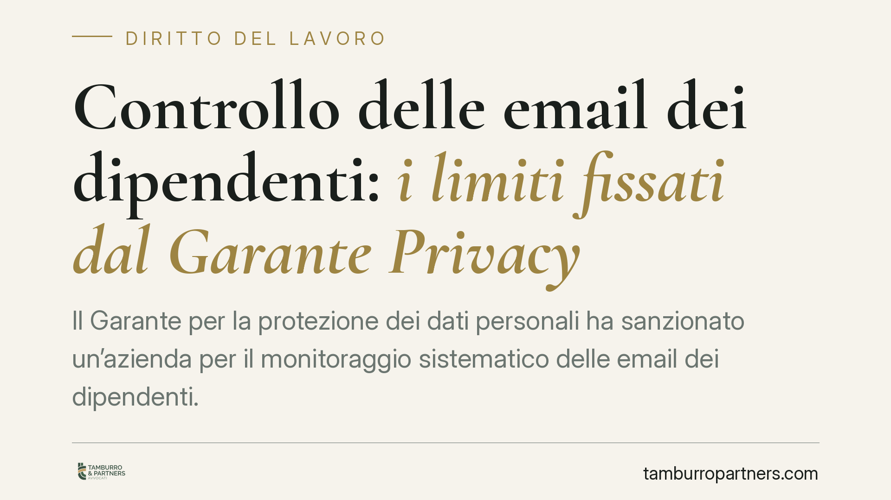

Controllo delle email dei dipendenti: i limiti fissati dal Garante Privacy
Il Garante per la protezione dei dati personali ha sanzionato un'azienda per il monitoraggio sistematico delle email dei dipendenti. La decisione riafferma un principio chiaro: il controllo generalizzato e prolungato della corrispondenza aziendale è illegittimo. Per i datori di lavoro significa rivedere policy, tempi di conservazione e strumenti di raccolta dei dati.

Il caso
Il Garante Privacy è tornato a occuparsi di un tema ricorrente nel rapporto di lavoro: fin dove può spingersi il datore nel controllare la posta elettronica dei dipendenti. L'Autorità ha sanzionato un'azienda che aveva raccolto e conservato in modo sistematico i dati relativi alle email dei lavoratori, ben oltre quanto necessario a soddisfare esigenze organizzative o difensive.
Il punto non è la titolarità dello strumento. La casella aziendale appartiene all'impresa. Il problema nasce quando la raccolta diventa continua, indiscriminata e non proporzionata rispetto alla finalità dichiarata. In quel momento il controllo cambia natura: da verifica occasionale a sorveglianza.
Inquadramento normativo
La disciplina si regge su due pilastri che vanno letti insieme.
Il primo è l'articolo 4 dello Statuto dei lavoratori (legge n. 300/1970), come riformato dal Jobs Act. La norma consente l'uso di strumenti dai quali derivi anche un controllo a distanza dell'attività lavorativa solo per esigenze organizzative, produttive, di sicurezza o tutela del patrimonio, e comunque previo accordo sindacale o autorizzazione dell'Ispettorato. Gli strumenti "assegnati per rendere la prestazione" (come la casella email) sfuggono a questo obbligo, ma restano soggetti a informativa e al rispetto della normativa privacy.
Il secondo pilastro è il GDPR, il Regolamento UE 2016/679. Rilevano in particolare i principi di minimizzazione (raccogliere solo i dati necessari) e di limitazione della conservazione (non trattenerli oltre il tempo utile). A questi si aggiunge l'obbligo di trasparenza: il lavoratore deve sapere in anticipo se, come e per quanto tempo le sue comunicazioni possono essere trattate.
È proprio su questi principi che il Garante fonda la censura: un monitoraggio prolungato, senza limiti temporali chiari e senza adeguata informativa, viola la proporzionalità e trasforma la verifica in profilazione.
Implicazioni pratiche
Per le aziende la decisione conferma che la proprietà dello strumento non equivale a una licenza di controllo illimitato.
Un conto è accedere alla casella per garantire la continuità aziendale durante l'assenza di un dipendente. Altro è conservare per mesi log, contenuti e metadati di tutte le comunicazioni, pronti a essere usati in chiave disciplinare o difensiva.
Il primo scenario può essere legittimo se circoscritto e trasparente. Il secondo espone l'impresa a sanzioni del Garante e, sul piano giuslavoristico, rende inutilizzabili le prove così raccolte. In un contenzioso, un controllo illegittimo non solo non aiuta il datore: lo indebolisce.
Per i lavoratori, la pronuncia rafforza la tutela della riservatezza anche sugli strumenti aziendali. La corrispondenza, pur transitando su account dell'impresa, non è per ciò solo liberamente ispezionabile.
Cosa fare in concreto
- Redigete una policy aziendale scritta sull'uso degli strumenti informatici, chiara sui controlli possibili, sulle finalità e sui tempi di conservazione dei dati. Consegnatela e fatela sottoscrivere.
- Definite tempi di conservazione limitati e giustificati. Evitate la ritenzione indiscriminata di email e metadati: fissate scadenze e procedete alla cancellazione.
- Verificate la necessità dell'accordo sindacale o dell'autorizzazione ispettiva per ogni sistema che consenta un controllo a distanza, distinguendo tra strumenti di lavoro e strumenti di controllo.
- Aggiornate l'informativa privacy ai sensi degli articoli 13 e 14 GDPR, specificando modalità e limiti del trattamento delle comunicazioni.
- Prima di ogni accesso in chiave difensiva o disciplinare, valutate proporzionalità e legittimità. Un controllo raccolto male non è una prova: è un rischio.
Un principio da non dimenticare
Il rapporto di lavoro non sospende i diritti fondamentali. Il potere di controllo del datore esiste, ma va esercitato entro confini precisi. Il Garante lo ribadisce con costanza: la difesa del patrimonio aziendale non autorizza la sorveglianza generalizzata. Consigliamo alle imprese di trattare la revisione delle proprie prassi non come un adempimento formale, ma come una tutela concreta contro sanzioni e contenzioni evitabili.
---
*Contributo informativo a cura di Tamburro & Partners - Avv. Giuseppe Tamburro. Non costituisce parere legale.*
Ogni storia di lavoro ha i suoi tempi.
Se gestisci HR e vuoi un confronto su contenzioso, ispezioni o licenziamenti, scrivi allo studio. Ti rispondiamo entro un giorno lavorativo.